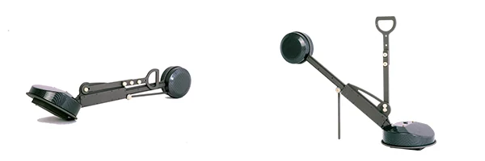
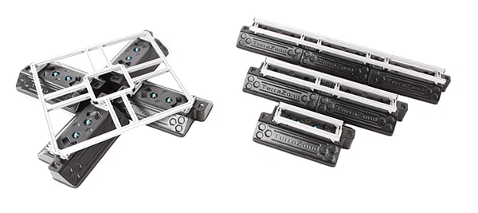

Приглашаем посетить конференцию и выставку “ГЕОРАДАР-2018”, которая пройдет 12-13 марта 2018 года, в Москве в Бизнес-центре гостиницы “Салют”.
На конференции вас ждут новые темы: “шаманство” и фальсификации в георадиолокации, обсуждение проблем внедрения георадиолокации в инженерно-геологическую отрасль (законодательство, нормативые акты, сметирование), неохваченные темы докладов – георадиолокация в комплексе геофизических методов, георадар в археологии, георадиолокационная томография.

